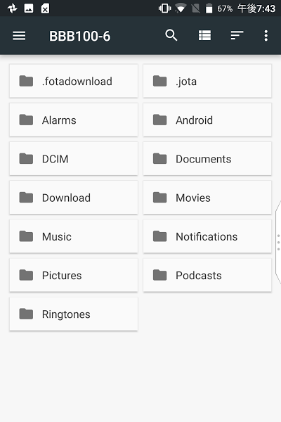
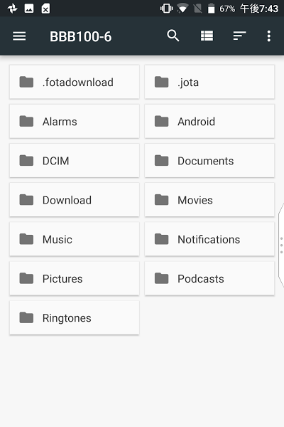

BlackBerry KEYone 小ネタ集¶
BlackBerry KEYone を使っていて発見した小ネタ。
なお、プリインストールされている「BlackBerryヘルプ」アプリにもいろんなヒントが書かれています。
Updated on 2017-10-01
テキスト範囲選択 を追加
キーボードの入力言語を切り替えるショートカットキー¶
- 物理キーボード
alt + ↩︎ (return)で、入力言語を切り替えることができる。（トグル式）Space キー長押しでも言語切り替えできる。（選択式）
- ソフトウェアキーボード
Space を右にスワイプ
他の方法も上述のサポートページで紹介されています。
カーソルモードで一文字分だけカーソル移動¶
カーソルモードで、キーボードの左側をタップすると一文字左にカーソル移動、右側だと右に一文字移動、中間の上側で上に一つ移動、下側で下に一つ移動できる。
「検索」のショートカットについて¶
デフォルトで S キー長押しに設定されている「検索」のショートカットですが、これを他の機能に変更したり削除してしまうと、今のところ元に戻せない（戻す方法が見つからない）。
ということで、「デバイスの検索」の機能で代用するか、Chromeを起動するようにして後述のショートカットキーでアドレスバーを選択して検索するかで対応したいと思います。
Updated on 2018-01-06
最近のアップデートで、キーボードショートカットにアプリのショートカットを割り当てられるようになりました。それにより、キーボードショートカットの設定で Google アプリの Search を割り当てることで元に戻せます。
Chromeで使えるショートカットキー¶
ショートカット |
動作 |
|---|---|
alt + D |
アドレスバー選択 |
alt + E か alt + F |
メニューを表示 |
スペース |
下にスクロール |
Shift + スペース |
上にスクロール |
生産性タブを移動する¶
画面の右または左に表示される「生産性タブ」は、長押しするとドラッグして位置を動かすことができる。
スクリーンショット¶
「電源ボタン」と「ボリューム下げる」ボタンを同時に押して、1秒ほど押し続けるとスクリーンショットを取ることができる。
ファイルエクスプローラー¶
設定 > ストレージ > 検索 でファイルエクスプローラーを表示できる。

 

{kind=link}
「タスク」アプリについて¶
プリインストールされている「タスク」アプリは、以下のような、Microsoft Exchange ActiveSyncアカウント（バージョン2.5以降）としか連携できない。
Microsoft Outlook (Microsoft Exchange Serverバージョン)
Novell GroupWise
Windows Live Hotmail/Outlook (Webバージョン)
ちなみに、HUBにOutlookのメールアカウントを追加する場合、2段階認証を利用していると、Outlookアカウントのパスワードを入力しても認証が通りません。 その場合は、Outlook のセキュリティ設定のページで アプリパスワードを生成 して、生成されたパスワードを入力すればOKです。
Updated on 2017-08-15
Chromeのショートカットを追記
カーソルモードについて追記
「タスク」アプリについて追記
テキスト範囲選択¶
カーソルモードにしなくても、 Shiftキーを少し長押しし、押したままの状態でキーボードをスワイプすると範囲選択できる。
注釈
Shiftキーを1秒ぐらい押すとステータスバーの矢印アイコンが白塗りになります。
Comments
comments powered by Disqus